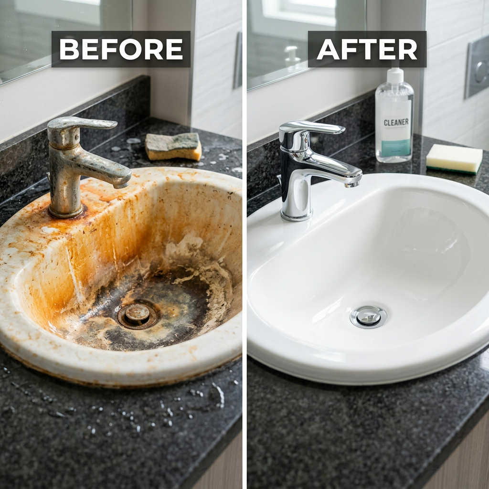
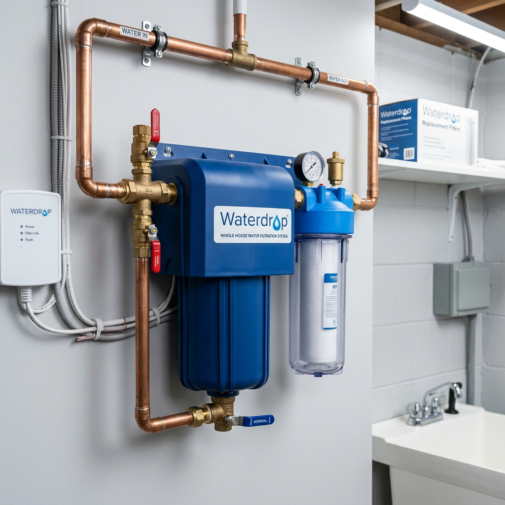

2 Best Iron Filters for Well Water in 2024: Stop Rust Stains and Metallic Taste Forever
The Costly Nightmare of Iron-Laden Well Water
Are you tired of scrubbing stubborn orange stains out of your bathtub, toilet, and sinks every single week? Does your morning coffee have a distinct metallic tang, or does your laundry come out of the wash looking dingier than when it went in? If you rely on well water, you aren't just dealing with an aesthetic nuisance—you are facing a slow-motion assault on your home's plumbing and appliances.
Iron and manganese are the primary culprits behind pipe scaling, reduced water pressure, and the premature death of water heaters and dishwashers. Without a dedicated iron filter for well water, these minerals oxidize the moment they hit the air, turning into the rust that ruins your home. As a CRO specialist and water quality expert, I’ve analyzed the data: the cost of installing a professional-grade filter is significantly lower than the cumulative cost of appliance repairs and chemical cleaners. Below, we compare the two industry-leading solutions from Waterdrop to help you reclaim your water quality.

| Product Name | Primary Benefit | Best For | Verdict |
|---|---|---|---|
| Waterdrop Whole House Iron & Manganese Filter | Targeted Heavy Metal Removal | High Iron/Manganese Concentrations | The Specialist Choice |
| Waterdrop 3-Stage Whole House Filtration System | Comprehensive Multi-Stage Purity | General Well Water Contaminants | The All-Rounder Choice |
Deep Dive: Waterdrop Whole House Iron & Manganese Filter
If your primary concern is the heavy presence of iron, manganese, and that unpleasant "rotten egg" sulfur smell, the Waterdrop Whole House Iron & Manganese Filter is the surgical tool you need. Unlike generic filters that get clogged by heavy metals, this system is specifically engineered to neutralize high-density contaminants.
Why It’s a Game Changer:
- High-Efficiency Manganese Sand: Uses specialized filter media that effectively reduces iron concentrations, preventing the oxidation that causes staining.
- Protects Your Infrastructure: By removing these minerals at the point of entry, you extend the life of your plumbing and high-end appliances by up to 50%.
- No Pressure Loss: Designed for high-flow rates, ensuring you don't have to choose between clean water and a strong shower.
- Long-Lasting Performance: Features a massive capacity, meaning fewer filter changes and lower maintenance costs over time.
This system is the "heavy lifter" for homeowners who have tested their water and found high levels of dissolved iron (clear water iron) or ferric iron (red water iron).
Check Price on Official Store
Deep Dive: Waterdrop 3-Stage Whole House Filtration System
For many well owners, iron isn't the only ghost in the machine. Sediment, chlorine, pesticides, and heavy metals like lead often coexist in well water. The Waterdrop 3-Stage Whole House Filtration System offers a holistic approach to water safety, providing a three-layered defense for your entire household.
The Power of Triple Filtration:
- Stage 1: PP Sediment Filter: Captures sand, rust, and large particles that clog your faucets.
- Stage 2: GAC Filter: Eliminates odors, chlorine, and improves the overall taste profile of your water.
- Stage 3: CTO/Iron Filter: A final polish that targets residual iron and organic chemicals, ensuring every drop is crisp and clear.
This system is ideal for families who want "bottled water quality" from every tap in the house. It doesn't just protect your pipes; it protects your skin, hair, and health by removing the harsh chemicals often found in groundwater.
Check Price on Official StoreChoosing the Right Iron Filter for Well Water
Choosing between these two systems comes down to your specific water chemistry. If your water looks clear but turns orange after sitting, or if you see black specks (manganese), the Waterdrop Whole House Iron & Manganese Filter is your best defense. It is a high-capacity specialist designed for harsh well conditions.
However, if you want a comprehensive solution that addresses taste, odor, sediment, and a broad spectrum of chemicals alongside moderate iron levels, the 3-Stage System offers the best value for total home protection.
Final Recommendation
Don't wait for your water heater to fail or your white linens to be permanently ruined. Investing in a high-quality iron filter for well water is a proactive step that pays for itself in home value and peace of mind. Waterdrop’s advanced filtration technology ensures that you get professional-grade results without the need for expensive, salt-based water softeners that can be difficult to maintain.
Pro Tip: Always perform a basic water test before purchasing to identify your exact iron parts-per-million (PPM). This ensures you select the system that will perform most efficiently for your unique well environment.
Check Price on Official Store